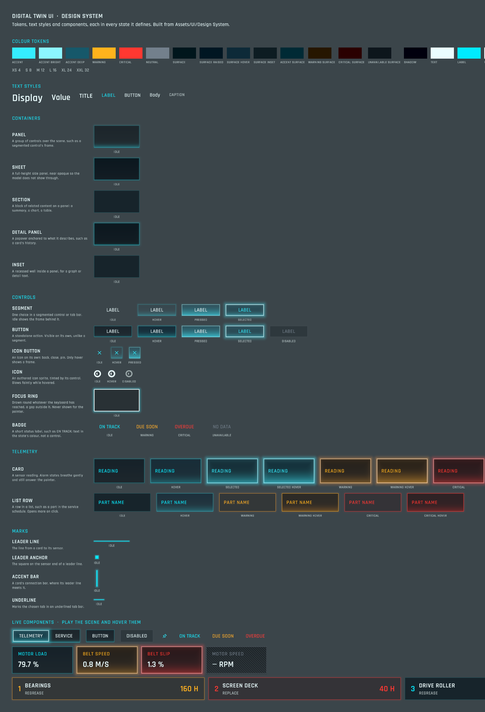

Design system
Digital Twin UI
The interface of the WebGL digital twin is one system of tokens, components and states. Nothing here is a screenshot: every panel, card and line is drawn per pixel by a WebGL port of the project's own UIShape shader, from values exported straight out of the Unity assets. Hover, press, click, or Tab through the shapes.
Try the Bright scene backdrop above: glow is light added, so it fades on a bright scene, and the sharp dark shadow is what keeps edges and text readable.
This page draws with WebGL 2, which this browser does not provide. Below is the static catalog rendered from Unity.

Tokens
Named values, like variables in a design tool. Styles refer to a colour token plus an alpha, so changing Accent changes every edge, glow and label that uses it. Click a swatch to edit it: the whole page re-themes live. Edits stay in this page; to change the product, edit UI Tokens.asset.
Spacing
Motion
Text styles
Seven styles in Rajdhani. Text always carries a sharp dark shadow so it reads on a bright scene; switch the backdrop to see it.
Components
Each component in every state it defines. The first row is live. Click any specimen to open its style in the inspector and move its sliders: glow, stroke, bottom light, highlight, colours and motion update everywhere that style is used, as an edit to the asset would in Unity.
Composition
The same components assembled as in the app: a telemetry rail beside the service sheet. Drag the load slider past 85 % and 95 % to see Warning and Critical, which breathe and still answer the pointer. Click a card to focus it.
State rules
At rest
Content panels (sections, list rows, a detail well) are a dark, slightly see-through well with no light. Only something you can use lights up, and only on hover.
Hover
A faint light turns on from the bottom edge and the edge firms up. Kept quiet so it never looks like Selected.
Selected
An overexposed, near-white edge and a wide glow in the colour. A selected or disabled control does not answer the pointer, except where a Selected Hover look exists, like the focused card.
Control colours
A control's label and icon are Control Selected (near white) when it is chosen and Control (a quiet cyan) at rest: unselected segments, buttons, icon buttons. Neutral when it cannot be used. The accent is for edges and glows, never a selected label.
Keyboard focus
The hover look plus a near-white Focus Ring a gap outside the control. It shows only while the keyboard is in use. Press Tab on this page.
Warning and Critical
Colour the edge and surface and breathe gently. They still answer the pointer, with a brighter edge and a higher light.
Unavailable
Grey with diagonal hatching. A badge is text alone, so it never reads as a button.
Using it in Unity
Where it lives
Assets/UI/Design System/ holds the tokens and a folder per component with one style per state. Assets/Resources/UI Theme.asset lists them. Assets/Documentation/UI_DESIGN_SYSTEM.md explains the rest.
Build new UI
GameObject > Digital Twin UI creates a Panel, Section, Button, Icon Button, Segmented Control, Badge, Card or List Row, with auto layout, a UI Shape and a UI Control State already set up.
Refresh this site
After a token, component or style changes, run python3 Tools/DesignSystemSite/export_design_system.py and commit docs/design-system/data.js.